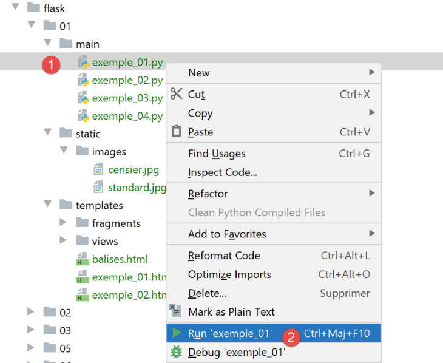
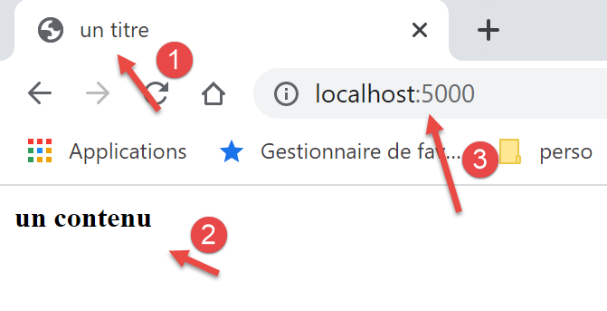
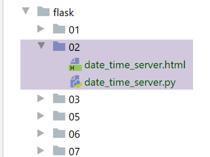
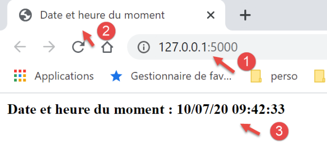
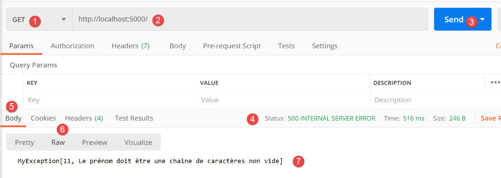
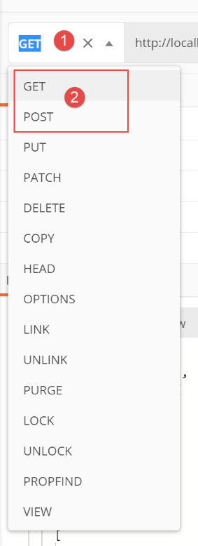
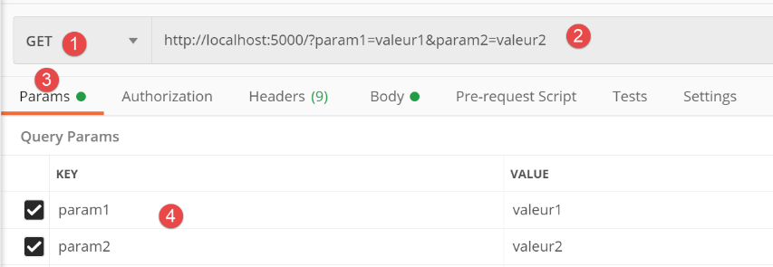
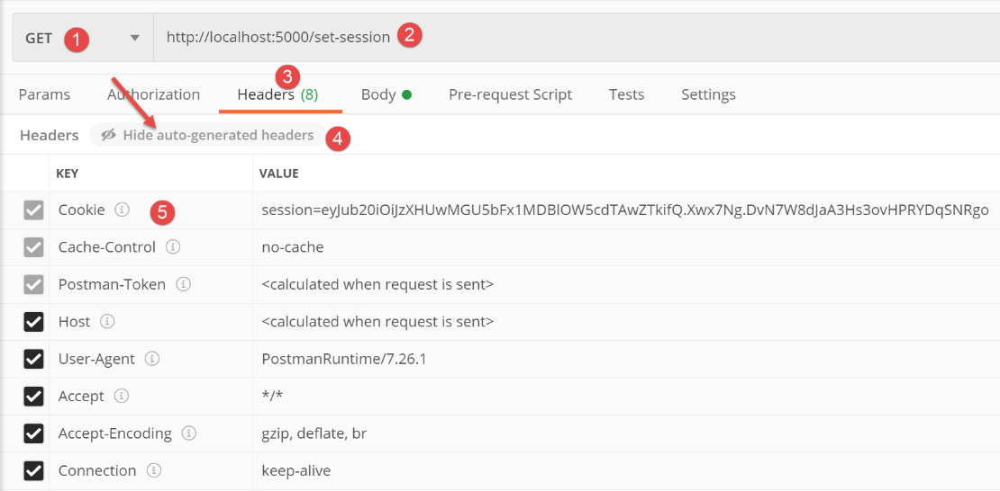
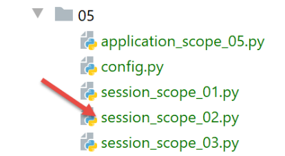
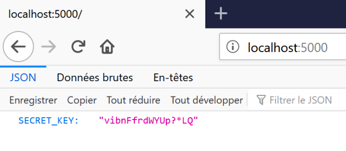

22. Web services with the Flask framework
By web service, we mean here any web application that delivers raw data consumed by a client, often a console script in the examples that follow. We are not concerned with a specific technology, such as REST (REpresentational State Transfer) or SOAP (Simple Object Access Protocol), which deliver more or less raw data in a well-defined format. REST returns JSON, while for SOAP returns XML. Each of these technologies precisely describes how the client must query the server and the format the server’s response must take. In this course, we will be much more flexible regarding the nature of the client’s request and the server’s response. However, the scripts written and the tools used are similar to those of REST technology.
22.1. Introduction
Python scripts can be executed by a web server. Such a script becomes a server program capable of serving multiple clients. From the client’s perspective, calling a web service amounts to requesting the URL of that service. The client can be written in any language, including Python. In the latter case, we use the internet functions we just covered. We also need to know how to “communicate” with a web service, that is, understand the HTTP protocol for communication between a web server and its clients. That was the purpose of the section on the HTTP protocol. The web clients described in this part of the course have allowed us to explore part of the HTTP protocol.

In their simplest form, client/server exchanges proceed as follows:
- the client opens a connection to port 80 on the web server;
- it makes a request for a document;
- the web server sends the requested document and closes the connection;
- the client then closes the connection;
The document can be of various types: text in HTML format, an image, a video, etc. It can be an existing document (static document) or a document generated on the fly by a script (dynamic document). In the latter case, we refer to web programming. The script for dynamically generating documents can be written in various languages: PHP, Python, Perl, Java, Ruby, C#, VB.NET, etc.
In the following, we will use Python scripts to dynamically generate text documents.

- In [1], the client establishes a connection with the server, requests a Python script, and may or may not send parameters to that script;
- In [3], the web server executes the Python script using the Python interpreter. The script generates a document that is sent to the client [2];
- The server closes the connection. The client does the same;
The web server can handle multiple clients at once.
In the following, we will use two web servers:
- the lightweight Werkzeug server [https://werkzeug.palletsprojects.com/en/1.0.x/]. This server is used by the Flask web framework [https://flask.palletsprojects.com/en/1.1.x/]. We will most often refer to it as the Flask server;
- the Apache 2 server [https://httpd.apache.org/];
The Flask server will be used in all of the examples. The Apache server will be used to host the web application we are going to develop.
The Flask framework is written in Python. It is a module that is installed in a PyCharm terminal:
(venv) C:\Data\st-2020\dev\python\cours-2020\python3-flask-2020\inet\utilitaires>pip install flask
Collecting flask
Downloading Flask-1.1.2-py2.py3-none-any.whl (94 kB)
|| 94 kB 1.1 MB/s
Collecting click>=5.1
Downloading click-7.1.2-py2.py3-none-any.whl (82 kB)
|| 82 kB 5.8 MB/s
Collecting itsdangerous>=0.24
Downloading itsdangerous-1.1.0-py2.py3-none-any.whl (16 kB)
Collecting Jinja2>=2.10.1
Downloading Jinja2-2.11.2-py2.py3-none-any.whl (125 kB)
|| 125 KB 6.4 MB/s
Collecting Werkzeug>=0.15
Downloading Werkzeug-1.0.1-py2.py3-none-any.whl (298 kB)
|| 298 kB 6.4 MB/s
Collecting MarkupSafe>=0.23
Downloading MarkupSafe-1.1.1-cp38-cp38-win_amd64.whl (16 kB)
Installing collected packages: click, itsdangerous, MarkupSafe, Jinja2, Werkzeug, flask
Successfully installed Jinja2-2.11.2 MarkupSafe-1.1.1 Werkzeug-1.0.1 click-7.1.2 flask-1.1.2 itsdangerous-1.1.0
- Line 1: the command executed;
- line 19: the components that were installed:
- [flask-1.1.2]: is a Python web development framework;
- [Werkzeug-1.0.1]: is the web server that will respond to client requests;
- [Jinja2-2.11.2]: is a tool that allows dynamic elements to be inserted into pages that would otherwise be static;
22.2. scripts [flask/01]: first elements of web programming

Our examples will be run in the following architecture:

- in [1], a Python script will be executed just like a standard console script;
- in [2], transparently, a web server is instantiated and waits for requests. In fact, it will accept only a single URL;
- in [3], the browser will request the server’s single URL;
- in [4], the server will execute the Python script specified by the console [1];
- in [5], the script will return its results to the web server, a text document;
- in [6], the web server sends this text document to the browser;
22.2.1. script [example_01]: basics of HTML
A web browser can display various documents, the most common being HTML (HyperText Markup Language) documents. These consist of text formatted with tags in the form <tag>text</tag>. Thus, the text <b>important</b> will display the text "important" in bold. There are standalone tags, such as the <hr/> tag, which displays a horizontal line. We will not review all the tags that can be found in HTML text. There are many WYSIWYG software programs that allow you to build a web page without writing a single line of HTML code. These tools automatically generate the HTML code for a layout created using the mouse and predefined controls. You can thus insert (using the mouse) a table into the page and then view the HTML code generated by the software to discover the tags to use for defining a table on a web page. It’s as simple as that. Furthermore, knowledge of HTML is essential since dynamic web applications must generate the HTML code themselves to send to web clients. This code is generated programmatically, and you must, of course, know what to generate so that the client receives the web page they want.
To summarize, you don’t need to know the entire HTML language to start web programming. However, this knowledge is necessary and can be acquired through the use of WYSIWYG web page builders such as DreamWeaver and dozens of others. Another way to discover the intricacies of HTML is to browse the web and view the source code of pages that feature interesting elements you haven’t encountered yet.
Consider the following example, which highlights some elements commonly found in a web document, such as:
- a table;
- an image;
- a link;

An HTML document is enclosed by the tags <html>…</html>. It consists of two parts:
- <head>…</head>: this is the non-displayable part of the document. It provides information to the browser that will display the document. It often contains the <title>…</title> tag, which sets the text that will appear in the browser’s title bar. It may also contain other tags, notably those defining the document’s keywords, which are then used by search engines. This section may also contain scripts, usually written in JavaScript or VBScript, which will be executed by the browser;
- <body attributes>…</body>: this is the section that will be displayed by the browser. The HTML tags contained in this section tell the browser the "desired" visual layout for the document. Each browser interprets these tags in its own way. As a result, two browsers may display the same web document differently. This is generally one of the challenges faced by web designers;
The HTML code for our example document is as follows:
<!DOCTYPE html>
<html xmlns="http://www.w3.org/1999/xhtml">
<head>
<meta http-equiv="Content-Type" content="text/html; charset=utf-8" />
<title>Some HTML tags</title>
</head>
<body style="background-image: url(/static/images/standard.jpg)">
<h1 style="text-align: left">Some HTML tags</h1>
<hr />
<table border="1">
<thead>
<tr>
<th>Column 1</th>
<th>Column 2</th>
<th>Column 3</th>
</tr>
</thead>
<tbody>
<tr>
<td>cell(1,1)</td>
<td style="text-align: center;">cell(1,2)</td>
<td>cell(1,3)</td>
</tr>
<tr>
<td>cell(2,1)</td>
<td>cell(2,2)</td>
<td>cell(2,3</td>
</tr>
</tbody>
</table>
<br /><br />
<table border="0">
<tr>
<td>An image</td>
<td>
<img border="0" src="/static/images/cherry-tree.jpg" />
</td>
</tr>
<tr>
<td>The Polytech'Angers website</td>
<td><a href="http://www.polytech-angers.fr/fr/index.html">here</a></td>
</tr>
</table>
</body>
</html>
HTML | HTML tags and examples |
| <title>Some HTML tags</title> (line 5) The text [Some HTML tags] will appear in the browser's title bar when the document is displayed |
| <hr />: displays a horizontal line (line 10) |
| <table attributes>….</table>: to define the table (lines 12, 32) <thead>…</thead>: to define the column headers (lines 13, 19) <tbody>…</tbody>: to define the table content (lines 20, 31) <tr attributes>…</tr>: to define a row (lines 21, 25) <td attributes>…</td>: to define a cell (line 22) examples: <table border="1">…</table>: the border attribute defines the thickness of the table border <td style="text-align: center;">cell(1,2)</td> (line 23): defines a cell whose content will be cell(1,2). This content will be horizontally centered (text-align: center). |
| <img border="0" src="/static/images/cherrytree.jpg"/> (line 38): defines an image with no border (border="0") whose source file is [/static/images/cherrytree.jpg] on the web server (src="/static/images/cherrytree.jpg"). If this link is in a web document accessible via the URL [http://server/chemin/balises.html], then the browser will request the URL [http://server/static/images/cherry-tree.jpg] to retrieve the image referenced here. |
| <a href="http://www.polytech-angers.fr/fr/index.html">here</a> (line 43): makes the text "here" serve as a link to the URL http://www.polytech-angers.fr/fr/index.html. |
| <body style="background-image: url(/static/images/standard.jpg)"> (line 8): indicates that the image to be used as the page background is located at the URL [/static/images/standard.jpg] on the web server. In the context of our example, the browser will request the URL [http://server/static/images/standard.jpg] to retrieve this background image. |
We can see in this simple example that to build the entire document, the browser must make three requests to the server:
- [http://server/chemin/balises.html] to retrieve the document’s HTML source;
- [http://server/static/images/cerisier.jpg] to retrieve the image cerisier.jpg;
- [http://server/static/images/standard.jpg] to retrieve the background image standard.jpg;
The script [example_01] will allow us to display the previous static page [tags.html]:

- in [1], the [example_01] script that will be executed;
- in [3], the HTML document that will be displayed by the script;
- in [2], the images from the HTML document;
The script [example_01] is as follows:
import os
from flask import Flask, make_response, render_template
# Flask application
script_dir = os.path.dirname(os.path.abspath(__file__))
app = Flask(__name__, template_folder=f"{script_dir}/../templates", static_folder=f"{script_dir}/../static")
# Home URL
@app.route('/')
def index():
# Display the page
return make_response(render_template("tags.html"))
# main
if __name__ == '__main__':
app.config.update(ENV="development", DEBUG=True)
app.run()
- Line 7: We instantiate a Flask application. A Flask application is a web application;
- the first parameter is the name given to the application. You can choose any name you like. Here we used the predefined attribute [__name__], which is set to [__main__] (line 18);
- the second parameter is a named parameter, meaning its position in the parameter list does not matter. The named parameter [template_folder] specifies the folder where the web application’s static pages are located. Static pages are delivered as-is to the browser. Here, the static pages will be found in the [templates] folder within the project directory tree. On line 7, we’ve specified a relative path to the [script_dir] folder containing the [example_01] script being executed;
- the third parameter is also a named parameter. [static_folder] specifies the folder where the HTML document’s resources (images, videos, etc.) are located. Here too, we have specified a relative path to the [script_dir] folder containing the executed [example_01] script;
- lines 10–14: we define the URLs accepted by the web application. Each URL is associated with a function that runs when the URL is requested by a web browser;
- line 11: the application’s only URL is [/]. Note that in [@app.route('/')], [app] is the variable initialized on line 7. The definition of routes (the various URLs handled by the application) must therefore come after the definition of the application [app]. The name of the application is arbitrary;
- lines 12–14: the function that runs when the URL [/] is requested from the web application [example_01];
- line 12: the function associated with a URL can have any name. It may sometimes have parameters to retrieve elements from the URL associated with it. Here, it does not;
- line 14:
- the [render_template] function returns a string that is the text document produced by its parameter. Here, that parameter is [balises.html]. Because of the [template_folder] in line 7, this document will be searched for in the folder [f"{script_dir}/../templates"]. That is indeed where it is located;
- the [make_response] function generates an HTTP response for the browser that requested the URL [/]. We saw in the section |the HTTP protocol| that an HTTP response has two parts:
- HTTP headers;
- the document requested by the browser, in this case an HTML document;
On line 14, we did not pass any parameters to the [make_response] function to generate HTTP headers. It will therefore generate default ones. We will see later how to set these HTTP headers.
- Finally, when the browser requests the URL / from the Flask application, it receives the page [tags.html];
- Lines 17–20: These lines are used to start the web server that will run the [example_01] web application;
- Line 18: This condition is true only when the [example_01] script is run in a console;
- Line 19: The [app] application from line 7 is configured:
- the parameter named [ENV="development"] sets the web server to development mode: as soon as the developer modifies an element of the application, it is regenerated and delivered to the web server. The developer does not need to request a new execution;
- the parameter named [DEBUG=True] allows the developer to set breakpoints in the application code;
- Line 20: The web application is launched: a web server is instantiated, and the web application is deployed on it to respond to requests from web clients;
Here is an example of a run:

The following logs then appear in the execution console:
C:\Data\st-2020\dev\python\cours-2020\python3-flask-2020\venv\Scripts\python.exe C:/Data/st-2020/dev/python/cours-2020/python3-flask-2020/flask/01/main/exemple_01.py
* Serving Flask app "example_01" (lazy loading)
* Environment: development
* Debug mode: on
* Restarting with stat
* Debugger is active!
* Debugger PIN: 334-263-283
* Running on http://127.0.0.1:5000/ (Press CTRL+C to quit)
- Line 2: The server displays the executed script;
- line 3: we are in development mode;
- lines 4-5: the server detects that it was launched in [debug] mode. It then restarts (line 5). The [debug] mode therefore slows down the startup slightly;
- Line 8: The URL where the deployed web application [example_01] is available;
Using a web browser, let’s request the URL [http://127.0.0.1:5000/]:

We do indeed get the expected [tags.html] document.
22.2.2. script [example_02]: dynamically generate an HTML document

The script [example_02] [1] will generate the following document [example_02.html] [2]:
<!DOCTYPE html>
<html lang="fr">
<head>
<meta charset="UTF-8">
<title>{{page.title}}</title>
</head>
<body>
<b>{{page.contents}}</b>
</body>
</html>
This document is dynamic because its content is not fully known until the web server serves it. Specifically, lines 5 and 8 contain two elements that are unknown at the time the page is written. They are only known when the page is sent to a client. They are then replaced with their values, which are strings.
- Lines 5, 8: The syntax {{expression}} is part of the Jinja2 template language [https://jinja.palletsprojects.com/en/2.11.x/]. Before the page is sent to a client, the dynamic elements of the page (lines 5 and 8) are evaluated and replaced with their values;
- line 5: we used the syntax [page.title]. We therefore assumed that when the page is generated before being sent, a variable [page] is known; we’ll see how. In the {{expression}} syntax, we can use any variable names we want. In lines 5 and 8, we could thus have {{title}} and {{contents}}. We could then say that [title] and [contents] are parameters of the page. In what follows, we will always use the same technique:
- the page’s sole parameter will be a dictionary [page];
- the attributes of this dictionary will be used in the page. Here, [page.title] on line 5 and [page.contents] on line 8;
The web application [example_02.py] is as follows:
from flask import Flask, make_response, render_template
# Flask application
script_dir = os.path.dirname(os.path.abspath(__file__))
app = Flask(__name__, template_folder=f"{script_dir}/../templates", static_folder=f"{script_dir}/../static")
# Home URL
@app.route('/')
def index():
# page content as a dictionary
page = {"title": "a title", "contents": "some content"}
# display the page
return make_response(render_template("example_02.html", page=page))
# main
if __name__ == '__main__':
app.config.update(ENV="development", DEBUG=True)
app.run()
- We have already explained lines 4–5 and 18–20 in the previous example. We will continue to use this structure in our examples;
- line 9: the only URL served by the web application is the URL /;
- line 14: the document served at the URL / is the [example_02.html] document we just discussed. We know it has a parameter, a dictionary called [page];
- line 12: we define the dictionary that will be passed as a parameter to the page [example_02.html]. It can have any name. However, it must have the [title, contents] attributes used in the HTML document;
- line 14: the [render_template] function is responsible for rendering the string of the [example_02.html] document. Since this is a parameterized document, we pass the expected parameter(s) to the [render_template] function. We do this here by assigning a value to the parameter named [page]. In the operation [page=page]:
- To the left of the = sign is the [page] parameter used in the document [example_02.html];
- to the right of the = sign, we have the value [page] defined on line 12;
- In general, if an HTML document has parameters [param1, param2, …, paramn], we pass their values to the [render_template] function in the form [render_template(document, param1=value1, param2=value2, …] ;
Before running [example_02], we must stop the execution of [example_01]:

If, while running script 1, it seems like script 2 is running, it’s probably because script 2 is still running. To return to a known state, you can stop all currently running processes in PyCharm (top right of the PyCharm window):

Let’s run script [example_02]:

The console logs are then as follows:
C:\Data\st-2020\dev\python\cours-2020\python3-flask-2020\venv\Scripts\python.exe C:/Data/st-2020/dev/python/cours-2020/python3-flask-2020/flask/01/main/exemple_02.py
* Serving Flask app "example_02" (lazy loading)
* Environment: development
* Debug mode: on
* Restarting with stat
* Debugger is active!
* Debugger PIN: 334-263-283
* Running on http://127.0.0.1:5000/ (Press CTRL+C to quit)
Line 8 indicates the deployment port (5000) of the [example_02] application (line 1) on the [localhost] machine. Since the preceding lines are always the same, we will not show them again.
Using a browser, we request the URL [http://localhost:5000/]:

- the expression {{page.title}} produced [1];
- the expression {{page.contents}} produced [2];
22.2.3. script [example_03]: using page fragments

- in [1], the script [example_03.py] will generate the dynamic document [example_03.html] [2]. This will be constructed from the page fragments [fragment_01.html, fragment_02.html] [3];
The document [example_03.html] will be as follows:
<!DOCTYPE html>
<html lang="fr">
{% include "fragments/fragment_01.html" %}
<body>
{% include "fragments/fragment_02.html" %}
</body>
</html>
- Lines 3 and 5 use the Jinja2 [include] directive to include external elements in the document;
- the syntax is {% include … %}. The parameter of the [include] directive is the path to the document to be included. This path is relative to the [template_folder] parameter of the Flask application:
app = Flask(__name__, template_folder="../templates", static_folder="../static")
So here, the document paths are relative to the [templates] folder.
The fragment [fragment_01.html] (the names are, of course, arbitrary) is as follows:
<meta charset="UTF-8">
<title>{{page.title}}</title>
The fragment [fragment_02.html] is as follows:
<b>{{page.contents}}</b>
If we reconstruct the document [example_03.html] using these fragments, we get the following code:
<!DOCTYPE html>
<html lang="fr">
<meta charset="UTF-8">
<title>{{page.title}}</title>
<body>
<b>{{page.contents}}</b>
</body>
</html>
We therefore have a document identical to [example_02.html] but built from fragments.
The web script [example_03.py] is as follows:
import os
from flask import Flask, make_response, render_template
# Flask application
script_dir = os.path.dirname(os.path.abspath(__file__))
app = Flask(__name__, template_folder=f"{script_dir}/../templates", static_folder=f"{script_dir}/../static")
# Home URL
@app.route('/')
def index():
# page content
page = {"title": "another title", "contents": "another content"}
# Display the page
return make_response(render_template("views/example_03.html", page=page))
# main
if __name__ == '__main__':
app.config.update(ENV="development", DEBUG=True)
app.run()
The code is similar to that in [example_02.py]. Line 16 shows how to reference documents located in subfolders of [template_folder] from line 7.
Running the [example_03.py] script produces the following results in the browser:

22.3. [flask/02] scripts: date and time web service

The document [date_time_server.html] is as follows:
<!DOCTYPE html>
<html lang="fr">
<head>
<meta charset="UTF-8">
<title>Current date and time</title>
</head>
<body>
<b>Current date and time: {{page.date_time}}</b>
</body>
</html>
- line 8: the page accepts the parameter [page.date_time];
The web service [date_time_server.py] is as follows:
# imports
import os
import time
from flask import Flask, make_response, render_template
# Flask application
script_dir = os.path.dirname(os.path.abspath(__file__))
app = Flask(__name__, template_folder=f"{script_dir}")
# Home URL
@app.route('/')
def index():
# Send time to client
# time.localtime: number of milliseconds since January 1, 1970
# time.strftime is used to format the time and date
# date-time display format
# d: 2-digit day
# m: 2-digit month
# y: 2-digit year
# H: hour (0–23)
# M: minutes
# S: seconds
# current date and time
time_of_day = time.strftime('%d/%m/%y %H:%M:%S', time.localtime())
# Generate the document to send to the client
page = {"date_time": time_of_day}
document = render_template("date_time_server.html", page=page)
print("document", type(document), document)
# HTTP response to the client
response = make_response(document)
print("response", type(response), response)
return response
# main only
if __name__ == '__main__':
app.config.update(ENV="development", DEBUG=True)
app.run()
- line 13: the web application only serves the URL /;
- lines 15–24: explain how to retrieve the date and time and how to display them;
- line 27: string representing the current date and time;
- lines 28–30: generate the dynamic document [date_time_server.html] by passing it the [page] dictionary from line 29;
- line 31: displays the type of [document] and the document itself. We want to show that it is a string;
- line 33: generate the HTTP response to be sent to the client (it has not yet been sent);
- line 34: we display its type and value;
- line 35: the HTTP response is sent to the client;
Running the script produces the following result in a browser:

The logs in the console are as follows:
C:\Data\st-2020\dev\python\cours-2020\python3-flask-2020\venv\Scripts\python.exe C:\Data\st-2020\dev\python\cours-2020\python3-flask-2020\flask\02\date_time_server.py
* Serving Flask app "date_time_server" (lazy loading)
* Environment: development
* Debug mode: on
* Restarting with stat
* Debugger is active!
* Debugger PIN: 334-263-283
* Running on http://127.0.0.1:5000/ (Press CTRL+C to quit)
127.0.0.1 - - [10/Jul/2020 09:32:09] "GET / HTTP/1.1" 200 -
document <class 'str'> <!DOCTYPE html>
<html lang="fr">
<head>
<meta charset="UTF-8">
<title>Current date and time</title>
</head>
<body>
<b>Current date and time: 07/10/20 09:42:33</b>
</body>
</html>
response <class 'flask.wrappers.Response'> <Response 195 bytes [200 OK]>
- Line 10: We can see that the type of the value returned by [render_template] is [str]. This string is none other than the [date_time_server.html] document once it has been parsed (lines 10–19);
- Line 20: We can see that the type of the value returned by [make_response] is [flask.wrappers.Response]. The [Response.__str__] function was implicitly called to display the [Response] object. The string returned by this function provides two pieces of information about the HTTP response that will be sent:
- the sent document is 195 bytes;
- the HTTP response status is [200 OK]. We will see later that we have access to this status code;
22.4. scripts [flask/03]: web services generating plain text
We saw in a previous example that the web service returned the following document:
<!DOCTYPE html>
<html lang="fr">
<head>
<meta charset="UTF-8">
<title>Current date and time</title>
</head>
<body>
<b>Current date and time: {{page.date_time}}</b>
</body>
</html>
A web client might only be interested in the [page.date_time] information in line 8 and not in the surrounding HTML markup. The web service could return this information as a simple string. We will present examples of this type of web service here.
22.4.1. script [main_01]

- [main_01] is the web service;
- [config] is the web application configuration script;
- the web service uses some of the entities defined in [2];
The [config] script is as follows:
def configure():
# absolute path used as a reference for relative paths in the configuration
rootDir = "C:/Data/st-2020/dev/python/cours-2020/python3-flask-2020"
# application dependencies
absolute_dependencies = [
# Person, Utils, MyException
f"{rootDir}/classes/02/entities",
]
# Set the syspath
from myutils import set_syspath
set_syspath(absolute_dependencies)
# load the configuration
return {}
The primary purpose of this configuration is to define the Python Path for the web service. We need to be able to locate the entities [2] (line 8).
The web script [main_01] is as follows:
# configure the application
import config
config = config.configure()
# imports
from flask import Flask, make_response
from flask_api import status
# dependencies
from Personne import Personne
# Flask application (no static files here)
app = Flask(__name__)
# Home URL
@app.route('/')
def index():
# a person
person = Person().fromdict({"first_name": "Aglaë", "last_name": "de la Hûche", "age": 87})
# HTTP response
response = make_response(str(person))
# HTTP headers
response.headers.set("Content-type", "application/json; charset=utf8")
# return the HTTP response
return response, status.HTTP_200_OK
# main only
if __name__ == '__main__':
# start the server
app.config.update(ENV="development", DEBUG=True)
app.run()
- lines 1-3: the application's Python Path is set;
- lines 5-10: import the elements needed by the script;
- line 17: the web service only serves the / URL;
- line 20: a [Person] object is created;
- line 22: an HTTP response is created with the string representing the person. The [Person.__str__] function is called. This returns the JSON string of the person’s [asdict] dictionary (see |BaseEntity class|). The parameter of the [make_response] function is the text document sent to the client, so here the JSON string of a person;
- line 24: we add a [Content-type] header to the HTTP headers of the response, which tells the client what type of document it will receive—in this case, a JSON document encoded in UTF-8;
- line 26: we return a two-element tuple:
- the response to the client, including HTTP headers and the document;
- the response status code. Here we want to return the status code [200 OK]. The various status codes are defined by constants in the [flask_api] module imported on line 7;
The [flask_api] module is not available by default. You need to install it. You can do this in a PyCharm terminal:
(venv) C:\Data\st-2020\dev\python\cours-2020\python3-flask-2020\inet\utilitaires>pip install flask_api
Collecting flask_api
Downloading Flask_API-2.0-py3-none-any.whl (119 kB)
|| 119 kB 544 kB/s
Requirement already satisfied: Flask>=1.1 in c:\data\st-2020\dev\python\cours-2020\python3-flask-2020\venv\lib\site-packages (from flask_api) (1.1.2)
Requirement already satisfied: Jinja2>=2.10.1 in c:\data\st-2020\dev\python\cours-2020\python3-flask-2020\venv\lib\site-packages (from Flask>=1.1->flask_api) (2.11.2)
Requirement already satisfied: Werkzeug>=0.15 in c:\data\st-2020\dev\python\cours-2020\python3-flask-2020\venv\lib\site-packages (from Flask>=1.1->flask_api) (1.0.1)
Requirement already satisfied: click>=5.1 in c:\data\st-2020\dev\python\cours-2020\python3-flask-2020\venv\lib\site-packages (from Flask>=1.1->flask_api) (7.1.2)
Requirement already satisfied: itsdangerous>=0.24 in c:\data\st-2020\dev\python\cours-2020\python3-flask-2020\venv\lib\site-packages (from Flask>=1.1->flask_api) (1.1.0)
Requirement already satisfied: MarkupSafe>=0.23 in c:\data\st-2020\dev\python\cours-2020\python3-flask-2020\venv\lib\site-packages (from Jinja2>=2.10.1->Flask>=1.1->flask_api) (1.1.1
)
Installing collected packages: flask-api
Successfully installed flask-api-2.0
When running the web script [main_01], the following results are displayed in a browser:

- in [2], the received JSON string;
- in [3-4], we display the contents of the received document. We see that there is no HTML markup, only the JSON string;
Now let’s look at the role of the [Content-Type] header sent to the client by the web service. We put the browser into developer mode (usually F12) and request the same URL again. Below is a screenshot of a Chrome browser:

- In [1], select the [Network] tab;
- At [2, 4]: the URL requested by the browser;
- At [3], select the [Headers] tab (HTTP headers);
- at [5], the status code of the received HTTP response;
- in [6], the header indicating to the client that it will receive a JSON text. This allows the client to adapt to the response. Thus, the font used by Chrome to display a JSON response or a basic text response is not the same;

- in [8], select the [Response] tab to access the document sent by the web service, in this case a simple JSON string;
22.4.2. Postman
[Postman] is the tool that will allow us to query the various URLs of a web application. It allows us to:
- use any URL: these are manually constructed;
- to query the web server using GET, POST, PUT, OPTIONS, etc.;
- specify the GET or POST parameters;
- set the HTTP headers for the request;
- receive a response in JSON, XML, or HTML format;
- access the HTTP headers of the response. This gives you access to the server’s complete HTTP response;
[Postman] is an excellent educational tool for understanding client/server communication via the HTTP protocol.
[Postman] is available at the URL [https://www.getpostman.com/downloads/]. Proceed with the installation of your version of [Postman]. During installation, you will be asked to create an account: this will not be needed here. The [Postman] account is used to synchronize different devices so that the configuration of one is replicated on another. None of this is necessary here.
Once installed, [Postman] displays the following interface:

- in [2-3], you can access the product settings;

- in [6], the version used in this document;
Here, we will use [Postman] to test the previous JSON web service:
- we run the [flask/03/main_01] script;
- Then we make a request to the URL [http://localhost:5000/] using Postman;

- In [1], we create a request;
- in [2], it will be an HTTP GET request;
- in [3], the URL of the web service being queried;
- in [4], we send the request to the web service;

- in [5], select the [Body] tab, which displays the received document;
- in [6], select the [Pretty] tab, which displays the received document with appropriate formatting, in this case formatted for a JSON string;
- in [7], the received JSON document;
- in [8-9], the received document without formatting;

- in [10], the HTTP headers received by Postman are displayed;
- in [11], the HTTP status of the received response;
- in [12], the received HTTP headers;
- in [13], the [Content-type] header that allowed Postman to know it was going to receive a JSON string. Postman used this information to format the received document in a certain way;
There is another way to use Postman. It involves using the Postman console (Ctrl-Alt-C). This allows you to view the client/server dialogue. In addition to the Ctrl-Alt-C shortcut, the Postman console is accessible via an icon in the bottom-left corner of the main Postman window:

The Postman console records the client/server dialogs that occur when a Postman request is executed:

- in [3], the list of requests made by Postman since it was launched. The most recent ones are at the bottom of the list;
- in [4], the HTTP request made by Postman;
- in [5-6], the HTTP response sent by the web server;
- in [7], you can view the logs in [raw] mode, i.e., without any formatting;
In [raw] mode, the console window looks like this:

- in [8], the HTTP request made by Postman to the web server;
- in [9], the HTTP response sent by the web server;
- in [10], you can return to [pretty logs] mode;
To make the explanations easier to follow, we will number the lines obtained from the Postman console.
For the client:
For the server:
From now on, we will mainly use:
- [Postman] as a web client;
- the [Postman] console in [raw mode] to explain the client/server dialogue;
22.4.3. script [main_02]

The web script [main_02] is as follows:
# Configure the application
import config
config = config.configure()
# imports
from flask import Flask, make_response
from flask_api import status
# dependencies
from Personne import Personne
# Flask application
app = Flask(__name__)
# Home URL
@app.route('/')
def index():
# a person
person = Person().fromdict({"first_name": "Aglaë", "last_name": "de la Hûche", "age": 87})
# content
response = make_response(f"person[{person.first_name}, {person.last_name}, {person.age}]")
# HTTP headers
response.headers.set("Content-Type", "text/plain; charset=utf8")
# HTTP response
return response, status.HTTP_200_OK
# main only
if __name__ == '__main__':
# start the server
app.config.update(ENV="development", DEBUG=True)
app.run()
- The [main_02] script is similar to the [main_01] script. It differs in two ways:
- line 22: the document sent to the client is a raw string, not a JSON string;
- line 24: this is reflected in the [Content-Type] HTTP header, which specifies the type [text/plain] for the document;
We run the web script [main_02] and then use [Postman] to query it:

- in [1-3], we make the request to the web service;
- in [5], the OK status of the response;
- in [4, 6], the HTTP headers of the response;
- in [7], the [Content-Type] header;
- in [8-10], the document sent by the web service, a string of characters;
The Postman console displays the following logs:
Client request:
GET / HTTP/1.1
User-Agent: PostmanRuntime/7.26.1
Accept: */*
Cache-Control: no-cache
Postman-Token: 7c7fc9f3-8df8-49ae-9dc8-53c2d87d111a
Host: localhost:5000
Accept-Encoding: gzip, deflate, br
Connection: keep-alive
Server response:
HTTP/1.0 200 OK
Content-Type: text/plain; charset=utf8
Content-Length: 34
Server: Werkzeug/1.0.1 Python/3.8.1
Date: Mon, Jul 13, 2020 5:34:22 PM GMT
person[Aglaë, from La Hûche, 87]
22.4.4. script [main_03]

The web script [main_03] is as follows:
# configure the application
import config
config = config.configure()
# imports
from flask import Flask, make_response
from flask_api import status
# dependencies
from MyException import MyException
from Person import Person
# Flask application
app = Flask(__name__)
# Home URL
@app.route('/')
def index():
# Invalid user
error_message = None
try:
person = Person().fromdict({"first_name": "", "last_name": "", "age": 87})
except MyException as error:
error_message = f"{error}"
# error?
if error_message:
response = make_response(error_message)
status_code = status.HTTP_500_INTERNAL_SERVER_ERROR
else:
response = make_response(f"person[{person.first_name}, {person.last_name}, {person.age}]")
status_code = status.HTTP_200_OK
# HTTP headers
response.headers.set("Content-Type", "text/plain; charset=utf8")
# HTTP response
return response, status_code
# main only
if __name__ == '__main__':
# start the server
app.config.update(ENV="development", DEBUG=True)
app.run()
- line 23: an error is triggered by instantiating an incorrect person;
- lines 27–29: due to the error:
- line 28: prepare an HTTP response with the error message as its content;
- line 29: we set the HTTP status code to an error value [500 Internal Server Error];
- line 34: we tell the client that we are sending plain text;
- line 36: we send the HTTP response to the client;
We launch the web service [main_03] and use Postman to query it:

- In [1-3], we send the request;
- in [4], we receive a response with a status code [500 INTERNAL SERVER ERROR];
- in [5-7]: the response is text describing the error that occurred;

- in [8-10], the HTTP headers of the web service response;
In the Postman console, the results in [raw] mode are as follows:
Client request:
Server response:
HTTP/1.0 500 INTERNAL SERVER ERROR
Content-Type: text/plain; charset=utf8
Content-Length: 74
Server: Werkzeug/1.0.1 Python/3.8.1
Date: Mon, Jul 13, 2020 5:39:24 PM GMT
MyException[11, The first name must be a non-empty string]
22.5. scripts [flask/04]: information encapsulated in the request

The script [request_parameters.py] demonstrates that the web service has access to various pieces of information encapsulated in a web client’s request. The code is as follows:
# import
from flask import Flask, make_response, request
from flask_api import status
# Flask application
app = Flask(__name__)
# Home URL
@app.route('/', methods=['GET', 'POST'])
def index():
# Request parameters
request_data = {}
request_data["environ"] = f"{request.environ}"
request_data["path"] = request.path
request_data["full_path"] = request.full_path
request_data["script_root"] = request.script_root
request_data["url"] = request.url
request_data["base_url"] = request.base_url
request_data["url_root"] = request.url_root
request_data["accept_charsets"] = request.accept_charsets
request_data["accept_encodings"] = request.accept_encodings
request_data["accept_languages"] = request.accept_languages
request_data["accept_mimetypes"] = request.accept_mimetypes
request_data["args"] = request.args
request_data["content_encoding"] = request.content_encoding
request_data["content_length"] = request.content_length
request_data["content_type"] = request.content_type
request_data["endpoint"] = request.endpoint
request_data["files"] = request.files
request_data["form"] = request.form
request_data["host"] = request.host
request_data["method"] = request.method
request_data["query_string"] = request.query_string.decode()
request_data["referrer"] = request.referrer
request_data["remote_addr"] = request.remote_addr
request_data["remote_user"] = request.remote_user
request_data["scheme"] = request.scheme
request_data["script_root"] = request.script_root
request_data["user_agent"] = f"{request.user_agent}"
request_data["values"] = request.values
# HTTP response
response = make_response(request_data)
# HTTP headers
response.headers["Content-Type"] = "application/json; charset=utf-8"
# Send HTTP response
return response, status.HTTP_200_OK
# main
if __name__ == '__main__':
app.config.update(ENV="development", DEBUG=True)
app.run()
- Line 9: We’re making a change. We specify which verbs are allowed in the client’s request. Postman provides the list:

The first two [GET, POST] are the most commonly used and will also be the only ones used in this document. Returning to line 9 of the code, the [methods] parameter contains the list of methods from the list above that are allowed by the URL. In the absence of this parameter, only the [GET] method is allowed. This is what has been the case up until now;
- line 12: we will construct the [request_data] dictionary;
- line 13: the client’s request is available in a predefined object [request], imported on line 2, of type [werkzeug.local.LocalProxy]. The following lines retrieve various attributes of this object;
- rather than detailing each attribute of the [request] object, we will run this code and look at the results. We will then better understand the meaning of the various attributes displayed;
- Line 42: The dictionary [request_data] will be the content of the HTTP response. Remember that this must be text. Flask automatically converts dictionaries into JSON strings;
- line 44: we tell the client that it will receive JSON;
- line 46: we send the response to the client;
Using the Postman client, we send the following request to the previous web service:

- in [1-2], the request sent;
- in [2], the request is configured. The parameters are appended to the URL in the form [?param1=value1¶m2=value2]. There are two ways to enter these parameters in Postman:
- enter them directly into the URL;
- enter them in [3-4];
Both methods are equivalent;
We add additional parameters to the request:

- in [5-7], we add parameters to the body of the request. While URL parameters are visible to the user in a web browser, those in the request body are not visible. The browser (or Postman in this case) sends them to the server after the HTTP headers. The web client’s request then has the same structure as the web server’s response: HTTP headers followed by a document. This will introduce two new HTTP headers in the client’s request:
- [Content-Type]: the client tells the server what type of document it is sending;
- [Content-Length]: the size of the document in bytes;
- in [6], the encoding to use for the parameters declared in [7]. These can be encoded in various ways. [x-www-form-urlencoded] is a method frequently used by browsers;
Here is the request that will be generated:

The response to this request is as follows:

- in [1-5], we received a JSON string [3];
- What typically interests the web service are the URL parameters [?param1=value1¶m2=value2] and those passed in the request body (document). This is generally how the client sends information to the web service. As shown in [5], the URL parameters are available in [request.args];
The rest of the response is as follows:

- in [9], the attributes of the parameters included in the request body:
- [content_type] is the type of the document accompanying the request. We saw that this document contained information of the type [param=value] encoded in the form [x-www-form-urlencoded]. Postman therefore generated an HTTP [Content-Type] header indicating the nature of the document;
- [content_length] is the size of this document in bytes;
- In [10], the [request.environ] attribute contains a wealth of information about the environment in which the client’s request is processed. Most of this information can be found in the other attributes of the [request] object;
- in [11], the parameters present in the request body are available in the [request.form] attribute;
- in [12], the method used to send the request, here the [GET] method;
- in [13], the [request.values] attribute is the dictionary of all parameters, including those from the URL and those from the document body. To retrieve the request parameters, use the attribute:
- [request.args] to retrieve those present in the URL;
- [request.form] to retrieve those in the document body;
In the Postman console, the logs are as follows:
Client request:
GET /?param1=value1¶m2=value2 HTTP/1.1
User-Agent: PostmanRuntime/7.26.1
Accept: */*
Cache-Control: no-cache
Postman-Token: cbfac6aa-71a0-4076-a0c3-91d36d74a4c0
Host: localhost:5000
Accept-Encoding: gzip, deflate, br
Connection: keep-alive
Content-Type: application/x-www-form-urlencoded
Content-Length: 60
last_name=s%C3%A9l%C3%A9n%C3%A9&first_name=agla%C3%AB&%C3%A2ge=77
- line 9: the type of document sent to the server on line 12;
- line 11: the HTTP headers of the request are separated from the document sent by a blank line. This is how the server identifies the end of the client’s HTTP headers;
- line 12: the ‘URL-encoded’ document. All accented characters have been encoded;
The client’s response is as follows:
HTTP/1.0 200 OK
Content-Type: application/json; charset=utf-8
Content-Length: 2433
Server: Werkzeug/1.0.1 Python/3.8.1
Date: Wed, Jul 15, 2020 06:09:09 GMT
{
"accept_charsets": [],
"accept_encodings": [
[
"gzip",
1
],
[
"deflate",
1
],
[
"br",
1
]
],
"accept_languages": [],
"accept_mimetypes": [
[
"*/*",
1
]
],
"args": {
"param1": "value1",
"param2": "value2"
},
"base_url": "http://localhost:5000/",
"content_encoding": null,
"content_length": 60,
"content_type": "application/x-www-form-urlencoded",
"endpoint": "index",
"environ": "{'wsgi.version': (1, 0), 'wsgi.url_scheme': 'http', 'wsgi.input': <_io.BufferedReader name=908>, 'wsgi.errors': <_io.TextIOWrapper name='<stderr>' mode='w' encoding='utf-8'>, 'wsgi.multithread': True, 'wsgi.multiprocess': False, 'wsgi.run_once': False, 'werkzeug.server.shutdown': <function WSGIRequestHandler.make_environ.<locals>.shutdown_server at 0x00000173CA6E5160>, 'SERVER_SOFTWARE': 'Werkzeug/1.0.1', 'REQUEST_METHOD': 'GET', 'SCRIPT_NAME': '', 'PATH_INFO': '/', 'QUERY_STRING': 'param1=value1¶m2=value2', 'REQUEST_URI': '/?param1=value1¶m2=value2', 'RAW_URI': '/?param1=value1¶m2=value2', 'REMOTE_ADDR': '127.0.0.1', 'REMOTE_PORT': 50592, 'SERVER_NAME': '127.0.0.1', 'SERVER_PORT': '5000', 'SERVER_PROTOCOL': 'HTTP/1.1', 'HTTP_USER_AGENT': 'PostmanRuntime/7.26.1', 'HTTP_ACCEPT': '*/*', 'HTTP_CACHE_CONTROL': 'no-cache', 'HTTP_POSTMAN_TOKEN': 'cbfac6aa-71a0-4076-a0c3-91d36d74a4c0', 'HTTP_HOST': 'localhost:5000', 'HTTP_ACCEPT_ENCODING': 'gzip, deflate, br', 'HTTP_CONNECTION': 'keep-alive', 'CONTENT_TYPE': 'application/x-www-form-urlencoded', 'CONTENT_LENGTH': '60', 'werkzeug.request': <Request 'http://localhost:5000/?param1=valeur1¶m2=valeur2' [GET]>}",
"files": {},
"form": {
"name": "s\u00e9l\u00e9n\u00e9",
"first_name": "agla\u00eb",
"age": "77"
},
"full_path": "/?param1=value1¶m2=value2",
"host": "localhost:5000",
"method": "GET",
"path": "/",
"query_string": "param1=value1¶m2=value2",
"referrer": null,
"remote_addr": "127.0.0.1",
"remote_user": null,
"scheme": "http",
"script_root": "",
"url": "http://localhost:5000/?param1=valeur1¶m2=valeur2",
"url_root": "http://localhost:5000/",
"user_agent": "PostmanRuntime/7.26.1",
"values": {
"name": "s\u00e9l\u00e9n\u00e9",
"param1": "value1",
"param2": "value2",
"first_name": "agla\u00eb",
"age": "77"
}
}
- lines 1-5: the HTTP headers of the response end with a blank line;
- lines 41-45: accented characters have been UTF-8 encoded;
If we now use the [POST] method to send the same request with the same parameters, we will get the same response, except that in [12], we will have [‘method’: ‘POST’].
So what is the difference between the GET and POST methods? The difference is subtle and stems from how browsers have historically used them:
- Parameters in the URL are convenient because a URL configured this way can serve as a link within an HTML document. The user can also change the parameters themselves to obtain different responses from the server. In this case, browsers commonly use the [GET] method, and there is no body (content_length=0) in the request sent to the web server (no hidden parameters);
- Sometimes we don’t want parameters to be displayed in the URL. This is the case with passwords sent to the server. Furthermore, the space occupied by URL parameters is limited (a URL cannot exceed a certain length). Request body parameters do not have this limitation. Additionally, too many parameters in the URL make it unreadable. Let’s consider the common case of a website registration form. Historically, when HTML pages did not yet include JavaScript, browsers sent the entered information via a POST request. This was referred to as “posted values”;
So in the early days of web programming:
- GET methods were generally associated with requesting information from a web server;
- POST methods were generally associated with sending information from the browser to the server. The server was then “enriched” by this data;
Since then, JavaScript has come along. Whereas in the previous examples, the developer had no control (clicking a link inevitably triggered a GET, submitting a form inevitably involved a POST), JavaScript has given them back that control. In this model, the HTML page is linked to JavaScript code that can bypass the browser. Thus, a click on a link can be intercepted by the JavaScript code, which can then execute code that sends a request to the server. This request will be transparent to the user. They won’t see it. This code acts as a web client, and just as we did with Postman, the developer can create any request they want. To revisit the example of clicking a link, they can perform a POST request when, by default, the browser would have performed a GET request. These developments have made the differences between GET and POST less relevant.
However, developers often follow these rules:
- A GET request must not modify the server’s state. Successive GET requests made with the same parameters in the URL must return the same document. Furthermore, a GET request typically has no body (no associated document), only parameters in the URL;
- A POST request may modify the server’s state. Parameters are most often sent in the request body. These are referred to as posted values. The form example is the most telling: the values entered by the user are placed in the POST body, and the server stores them somewhere, often in a database;
In the rest of this document, we do not adhere to any specific rules.
22.6. scripts [flask-05]: managing user memory
22.6.1. Introduction
In the previous client/server examples, the process worked as follows:
- the client opens a connection to port 80 on the web server machine;
- it sends the text sequence: HTTP headers, blank line, [document];
- in response, the server sends a sequence of the same type;
- the server closes the connection to the client;
- the client closes the connection to the server;
If the same client makes a new request to the web server shortly thereafter, a new connection is established between the client and the server. The server cannot tell whether the connecting client has visited before or if this is the first request. Between connections, the server “forgets” its client. For this reason, the HTTP protocol is said to be a stateless protocol. However, it is useful for the server to remember its clients. For example, if an application is secure, the client will send the server a username and password to authenticate itself. If the server "forgets" its client between connections, the client would have to authenticate itself with every new connection, which is not feasible.
To track a client, the server can proceed in various ways:
- when a client makes an initial request, the server includes an identifier in its response that the client must then send back with every new request. Using this identifier, which is unique to each client, the server can recognize the client. It can then manage a cache for that client in the form of a cache uniquely associated with the client’s identifier. This is how PHP services work, for example;
- When a client makes an initial request, the server includes in its response not an identifier but the user’s memory itself. It stores nothing on the server side. To maintain its memory, the web client must resend this memory with every new request. This memory is modified (or not) with each new request and sent back (or not) to the client. This is the method used by the Flask framework;
The differences between the two methods are as follows:
- Method 1 uses less bandwidth. Only an identifier is exchanged between the client and the server. As the user’s memory grows, this has no effect on the identifier, which remains the same. This is not the case with Method 2, where the user’s memory is exchanged with each request and can grow over the course of multiple requests;
- Method 1 consumes more memory space. This is because the server stores the user’s memory on its file systems. If there are a million users, this could potentially pose a problem. Method 2 does not store anything on the server;
Technically, this is how it works in both methods:
- In the response to a new client, the server includes the HTTP header [Set-Cookie: Key=ID] or [Set-Cookie: memory]. With Method 1, it does this only on the first request. With Method 2, it does this every time the user’s memory changes;
- In its requests, the client systematically returns what it received—an identifier or a memory. It does this via the HTTP header [Cookie: Key=Value];
One might wonder how the server knows it is dealing with a new client rather than a returning one. It is the presence of the HTTP Cookie header in the client’s HTTP headers that tells it. For a new client, this header is absent.
The set of connections from a given client is called a session.
The server can maintain other types of memory:

- in [1], request-level memory is specific. It is used when the web client’s request is processed not by a single service (or application) but by multiple ones. To pass information to service i+1, service i can enrich the processed request with this information. This is called request-level memory. We will not use this type of memory in this document;
- in [2, 4], the user memory we have just described. It can be implemented locally [2] or maintained using the client [4];
- in [3], the "application-level" memory is generally read-only. It is shared by all users. It often contains elements of the web application’s configuration, which is shared by all users of the application. We must be careful with this type of memory: writing to it must occur at a time when users have not yet sent requests, most often at application startup. Once requests start arriving, it becomes difficult to write to this memory. When the web server is serving multiple users simultaneously and two of them attempt to write to the ‘application’ level memory, there is a risk that this memory will become corrupted. This is because, while User 1 has started writing to the ‘application’ level memory, they may be interrupted before finishing. This results in an incomplete application memory. Since it is shared, User 2 may read it and obtain an incorrect state;
22.6.2. script [session_scope_01]

The [session_scope_xx] scripts illustrate user memory management.
The script [session_scope_01] is as follows:
# configure the application
import config
config = config.configure()
# dependencies
import json
from flask import Flask, make_response, session
from flask_api import status
# Flask application
app = Flask(__name__)
# session secret key
app.secret_key = config["SECRET_KEY"]
@app.route('/set-session', methods=['GET'])
def set_session():
# we put something in the session
session['name'] = 'selene'
# send an empty response
response = make_response()
response.headers['Content-Length'] = 0
return response, status.HTTP_200_OK
@app.route('/get-session', methods=['GET'])
def get_session():
# retrieve the session and send the response
response = make_response(json.dumps({"name": session['name']}, ensure_ascii=False))
response.headers['Content-Type'] = 'application/json; charset=utf-8'
return response, status.HTTP_200_OK
# main only
if __name__ == '__main__':
app.config.update(ENV="development", DEBUG=True)
app.run()
- line 11: a Flask application is instantiated;
- line 14: the [secret_key] attribute of this application is assigned a value taken from the configuration file used in lines 1–3. A Flask session is only possible if this attribute is initialized. You can put anything in it. It is used to encrypt a portion of the ‘user data’ that will be sent to the client. We generally put something that is difficult to guess. In the [config] file, the secret key is defined as follows:
# set the configuration
config = {
# Flask configuration
"SECRET_KEY": "vibnFfrdWYUp?*LQ"
}
- For the first time, we are defining a web application that serves something other than the URL /
- line 17: the URL [/set-session] is used to initialize the user’s session;
- line 27: the URL [/get-session] is used to retrieve the user’s session;
- line 20: we put something into the user’s session, in this case a name. The session is managed somewhat like a dictionary. You cannot put just anything into the session. The values you put in must be able to be converted to JSON ( ). For Python’s predefined types, this happens automatically without developer intervention. For custom objects that Python does not recognize, you must perform the JSON conversion yourself;
- line 22: we create an HTTP response with no content (no parameters passed to `make_response`);
- line 23: we tell the client that it will receive an empty document (0 bytes in size);
- line 24: we send the HTTP response to the client. The URL [/set-session] therefore does nothing other than initialize a user session;
- line 27: the URL [/get-session] allows the user to see what is in their session;
- line 30: we create an HTTP response containing the JSON string of the user’s session. Here, we created the JSON string ourselves instead of letting Flask generate it. This is because we don’t want accented characters to be escaped (ensure_ascii=False);
- Line 31: We tell the client that we are sending JSON;
- line 32: we send the HTTP response to the client;
The purpose of this script is to demonstrate that the user session allows us to link the user’s successive requests:
- Request 1 will send a request to the URL [/set-session];
- Request 2 will request the URL [/get-session] and retrieve the name that Request 1 initialized;
The [config] script that configures the scripts in the [flask/05] folder is as follows:
def configure():
# absolute path used as a reference for relative paths in the configuration
root_dir = "C:/Data/st-2020/dev/python/cours-2020/python3-flask-2020"
# application dependencies
absolute_dependencies = [
# Person, Utils, MyException
f"{root_dir}/classes/02/entities",
]
# Set the syspath
from myutils import set_syspath
set_syspath(absolute_dependencies)
# load the configuration
config = {
# Flask configuration
"SECRET_KEY": "vibnFfrdWYUp?*LQ"
}
return config
We run the [session_scope_01] script, then use Postman to request the URL [/set-session]. Before doing so, we’ll check a few elements of the request that will be made:

- in [1], access Postman's cookies;

- in [2-4], we check Postman’s known cookies and delete them all [4-5];
Now let’s check the HTTP request that will be generated:

- in [9]: some of the HTTP headers that Postman will include in the request based on the configuration we set up for it. This check allows you to verify that you haven’t omitted any parameters or, conversely, left unnecessary parameters;
Once this is done, we can execute the request:

There are different ways to check the result. You can start by looking at the main window:

- in [1-2], the request sent to the web service;
- in [3-6], the HTTP headers of the response;
- in [4], since we didn’t specify the response type in the code, Flask used the default type [text/html];
- in [5], the client knows there is no document in the response;
- line 6: the [Set-Cookie] header was sent by the Flask server. Its value is called a session cookie. It consists of three elements:
- [session=value]: value represents the user’s session data in an encoded form. This data is decodable (see |https://blog.miguelgrinberg.com/post/how-secure-is-the-flask-user-session|). However, due to the secret key used by the server, the user cannot modify the received data and then send it back to the server. When the server receives a session, it is thus assured of receiving an uncorrupted session;
- [HttpOnly]: the presence of this attribute tells the browser receiving it that the cookie must not be accessible to any JavaScript that the page it is displaying may contain;
- [Path=/] is the path for which the session cookie must be sent back, meaning here any path within the web application. Whenever the user explicitly (by typing a URL) or implicitly (by clicking a link) requests a URL from this domain, the browser will automatically send back the session cookie it received;
The drawback of the main window is that you do not have access to the full request that led to this response. What is displayed in this window is confusing:

- In the HTTP headers [3-4], a session cookie is shown in [5]. One might think that Postman included a session cookie in the request, but that is not the case. The headers [3] actually represent the HTTP headers that will be sent in the next request, as it is currently configured. Postman has just received a session cookie, which it will send back in the next request. That is why we have [5];
You can access the client/server dialog in the Postman console by pressing Ctrl-Alt-C:
GET /set-session HTTP/1.1
User-Agent: PostmanRuntime/7.26.1
Accept: */*
Cache-Control: no-cache
Postman-Token: 3673b73f-7600-4df4-8c4b-c37973e50df8
Host: localhost:5000
Accept-Encoding: gzip, deflate, br
Connection: keep-alive
HTTP/1.0 200 OK
Content-Type: text/html; charset=utf-8
Content-Length: 0
Vary: Cookie
Set-Cookie: session=eyJub20iOiJzXHUwMGU5bFx1MDBlOW5cdTAwZTkifQ.Xw6jGQ.y5Icu70wTIN-B0o_hwx0xDH247I; HttpOnly; Path=/
Server: Werkzeug/1.0.1 Python/3.8.1
Date: Wed, 15 Jul 2020 06:32:57 GMT
- Line 14: the session cookie sent by the server;
Now let's request the URL [/get-session]:
GET /get-session HTTP/1.1
User-Agent: PostmanRuntime/7.26.1
Accept: */*
Cache-Control: no-cache
Postman-Token: ce991398-2d9a-46d0-9ccd-c7ff3c7f4d6d
Host: localhost:5000
Accept-Encoding: gzip, deflate, br
Connection: keep-alive
Cookie: session=eyJub20iOiJzXHUwMGU5bFx1MDBlOW5cdTAwZTkifQ.Xw6jGQ.y5Icu70wTIN-B0o_hwx0xDH247I
HTTP/1.0 200 OK
Content-Type: application/json; charset=utf-8
Content-Length: 20
Vary: Cookie
Server: Werkzeug/1.0.1 Python/3.8.1
Date: Wed, Jul 15, 2020 6:36:52 AM GMT
{"name": "selene"}
- line 9: the Postman client sent the session cookie it had received back to the server;
- line 18: the JSON string sent by the server;
This example illustrates several points:
- the Postman client sends back the session cookie it receives from the Flask server. Web browsers always do this;
- we see that request 2 [/get-session] retrieved information created during request 1 [/set-session]. This effectively serves as user state;
- Lines 11–16: The Flask server did not return a session cookie. This is not always the case. The Flask server only returns the session cookie if the last request modified the user’s session;
22.6.3. script [session_scope_02]

The [session_02] script is as follows:
# dependencies
import os
from flask import Flask, make_response, session
from flask_api import status
# Flask application
app = Flask(__name__)
# session secret key
app.secret_key = os.urandom(12).hex()
# Home URL
@app.route('/', methods=['GET'])
def index():
# We manage three counters
if session.get('n1') is None:
session['n1'] = 0
else:
session['n1'] = session['n1'] + 1
if session.get('n2') is None:
session['n2'] = 10
else:
session['n2'] = session['n2'] + 1
if session.get('n3') is None:
session['n3'] = 100
else:
session['n3'] = session['n3'] + 1
# counter dictionary
counters = {"n1": session['n1'], "n2": session['n2'], "n3": session['n3']}
# send the response
response = make_response(counters)
response.headers['Content-Type'] = 'application/json; charset=utf-8'
return response, status.HTTP_200_OK
# main
if __name__ == '__main__':
app.config.update(ENV="development", DEBUG=True)
app.run()
- line 11: here, the secret key is generated using a function. The advantage of this function is that it randomly generates a complex string. Note that the variable [app] is the Flask class instance created on line 8;
- line 15: this time, there will be only one route, the / route;
- Lines 17–29: We manage a session containing three counters [n1, n2, n3]. On the user’s first call, [n1, n2, n3] = [0, 10, 100], and on each subsequent call, these counters are incremented by 1;
- line 18: on the first request, the application session is empty. The expression [session.get('key')] returns the value [None]. For subsequent requests, this expression will return the value associated with the key;
- line 31: these counters are placed in a dictionary;
- line 33: this dictionary is the HTTP response body. Remember that Flask automatically converts dictionaries into JSON strings;
- line 34: the web client is told that it will receive JSON;
- line 35: we send the HTTP response to the client;
Let’s run this script and query the web application created this way using Postman after deleting all cookies from the Postman client [1-3]:

In the Postman console, the client/server exchanges are as follows:
GET / HTTP/1.1
User-Agent: PostmanRuntime/7.26.1
Accept: */*
Cache-Control: no-cache
Postman-Token: c7db536d-9352-4aa6-9877-04560e03d935
Host: localhost:5000
Accept-Encoding: gzip, deflate, br
Connection: keep-alive
HTTP/1.0 200 OK
Content-Type: application/json; charset=utf-8
Content-Length: 41
Vary: Cookie
Set-Cookie: session=eyJuMSI6MCwibjIiOjEwLCJuMyI6MTAwfQ.Xw6nLg.v49CeDWwqP-6Dp9Qt330GAe-dNA; HttpOnly; Path=/
Server: Werkzeug/1.0.1 Python/3.8.1
Date: Wed, 15 Jul 2020 06:50:22 GMT
{
"n1": 0,
"n2": 10,
"n3": 100
}
- in [14], the session cookie sent by the server;
- in [18-22], the server's response in the form of a JSON string;
Let’s make the same request a second time. The logs change as follows:
GET / HTTP/1.1
User-Agent: PostmanRuntime/7.26.1
Accept: */*
Cache-Control: no-cache
Postman-Token: 8205ad85-37b3-41f2-a171-70dd3b3a1679
Host: localhost:5000
Accept-Encoding: gzip, deflate, br
Connection: keep-alive
Cookie: session=eyJuMSI6MCwibjIiOjEwLCJuMyI6MTAwfQ.Xw6nLg.v49CeDWwqP-6Dp9Qt330GAe-dNA
HTTP/1.0 200 OK
Content-Type: application/json; charset=utf-8
Content-Length: 41
Vary: Cookie
Set-Cookie: session=eyJuMSI6MSwibjIiOjExLCJuMyI6MTAxfQ.Xw6nsw.OuxIQnGhmhSsan5Qu_FL3Iyu-9k; HttpOnly; Path=/
Server: Werkzeug/1.0.1 Python/3.8.1
Date: Wed, 15 Jul 2020 06:52:35 GMT
{
"n1": 1,
"n2": 11,
"n3": 101
}
- Line 9: The Postman client sends back the session cookie it received;
- line 15: in its response, the server sends a new session cookie, because the client’s request modified the user’s state (= the session);
- lines 19–23: the new counter values;
22.6.4. script [session_scope_03]
This new script aims to demonstrate that different Python types can be placed in a session: lists, dictionaries, and objects. The only requirement is that objects placed in the session must be serializable to JSON. If they are not serializable by default (lists, dictionaries), you must perform the conversion to JSON yourself.
# configure the application
import config
config = config.configure()
# dependencies
import json
import os
from flask import Flask, make_response, session
from flask_api import status
from Person import Person
# Flask application
app = Flask(__name__)
# session secret key
app.secret_key = os.urandom(12).hex()
# Home URL
@app.route('/', methods=['GET'])
def index():
# Manage a list
list = session.get('list')
if list is None:
# First request
list = [0, 10, 100]
else:
# subsequent requests
for i in range(len(list)):
list[i] += 1
# put the list back into the session
session['list'] = list
# managing a dictionary
dico = session.get('dico')
if not dictionary:
# First query
dico = {"one": 0, "two": 10, "three": 100}
else:
# subsequent requests
dico = session['dico']
for key in dic.keys():
dico[key] += 1
# put the dictionary back into the session
session['dico'] = dico
# managing a person
person_json = session.get('person')
if person_json is None:
# First request
person = Person().fromdict({"first_name": "Aglaë", "last_name": "Séléné", "age": 70})
else:
# subsequent requests
person = Person().fromjson(person_json)
person.age += 1
# put the person back into the session
session['person'] = person.asjson()
# dictionary of results
results = {"list": list, "dict": dict, "person": person.asdict()}
# send a JSON response
response = make_response(json.dumps(results, ensure_ascii=False))
response.headers['Content-Type'] = 'application/json; charset=utf-8'
return response, status.HTTP_200_OK
# main
if __name__ == '__main__':
app.config.update(ENV="development", DEBUG=True)
app.run()
- lines 1-3: the web application is configured;
- lines 5-11: dependencies are imported;
- line 14: the Flask application is instantiated;
- line 17: the [secret_key] attribute is initialized. This enables the use of sessions;
- line 21: the application’s single route;
- lines 23–33: managing a list in the session. We have placed elements in it that are serializable by default in JSON;
- lines 35–46: managing a dictionary in the session. We have placed elements in it that are serializable by default in JSON;
- lines 48–58: managing a person. A [Person] object is not serializable by default in JSON. Therefore, precautions must be taken;
- line 58: we use the [BaseEntity.asjson] method to store the person’s JSON string in the session. Note that we could have used [person.asdict] because [person.asdict] is a dictionary containing values that are serializable by default to JSON;
- line 55: since we stored a JSON string in the session, we retrieve the person from it using the [BaseEntity.fromjson] method;
- line 61: we create the [results] dictionary, which will be sent as a response to the client. We know that in this case, Flask sends the JSON string of the dictionary. Therefore, it must contain only values that are serializable to JSON by default;
- line 64: We explicitly set the JSON string of the [results] dictionary in the HTTP response. Flask would have done this by default. However, by default, it uses the [ensure_ascii=True] parameter, which did not suit our needs;
- line 65: we tell the client that it will receive JSON;
- line 66: we send the response to the client;
We launch the web application. We delete all cookies from the Postman client. Then the client requests the URL [http://localhost:5000]. The client/server dialogue in the Postman console is as follows:
GET / HTTP/1.1
User-Agent: PostmanRuntime/7.26.1
Accept: */*
Cache-Control: no-cache
Postman-Token: 5f8b7c63-aa8a-4429-a2fa-62141423d933
Host: localhost:5000
Accept-Encoding: gzip, deflate, br
Connection: keep-alive
HTTP/1.0 200 OK
Content-Type: application/json; charset=utf-8
Content-Length: 135
Vary: Cookie
Set-Cookie: session=.eJw9isEKwyAQRH-lzHkPm15K91dqD2mzBMFq0AgF8d-jsRQG9u3MK1jsO0AKFs1fyMSEPQabOjbOHsKV4GzaFfJgmnr4Sdg0puB9a1EMtmgys959-BjIxWBe3XxWLwNq_39IQ3Q_f5zhnHxdtYs3rqgH4gQvMg.Xw6yGw.Bwpt3q-sH03gFLmg2FIPXV_ZNt8; HttpOnly; Path=/
Server: Werkzeug/1.0.1 Python/3.8.1
Date: Wed, 15 Jul 2020 07:36:59 GMT
{"list": [0, 10, 100], "dict": {"one": 0, "two": 10, "three": 100}, "person": {"first_name": "aglaë", "last_name": "séléné", "age": 70}}
We make the request a second time:
GET / HTTP/1.1
User-Agent: PostmanRuntime/7.26.1
Accept: */*
Cache-Control: no-cache
Postman-Token: 40fd00ea-d45c-46b7-a51e-d4d433a37b5c
Host: localhost:5000
Accept-Encoding: gzip, deflate, br
Connection: keep-alive
Cookie: session=.eJw9isEKwyAQRH-lzHkPm15K91dqD2mzBMFq0AgF8d-jsRQG9u3MK1jsO0AKFs1fyMSEPQabOjbOHsKV4GzaFfJgmnr4Sdg0puB9a1EMtmgys959-BjIxWBe3XxWLwNq_39IQ3Q_f5zhnHxdtYs3rqgH4gQvMg.Xw6yGw.Bwpt3q-sH03gFLmg2FIPXV_ZNt8
HTTP/1.0 200 OK
Content-Type: application/json; charset=utf-8
Content-Length: 135
Vary: Cookie
Set-Cookie: session=.eJw9isEKwyAQRH-lzHkP2kupv9LtIW2WIBgNGqEg_nu3seQ0b2Zew-zfCa5hlvqBs5aw5-SLolGuUaETgi-7wD0sqaHPk7BJLilGXdEYW-ZqjNxjWhnuwpiWMB3Ti0Haz6MMMfz9EcM5-LrIT7zZjv4F5NYvOQ.Xw6ydQ.PMWRCqKx9HNnb_DyK-ha-9pCF7M; HttpOnly; Path=/
Server: Werkzeug/1.0.1 Python/3.8.1
Date: Wed, 15 Jul 2020 07:38:29 GMT
{"list": [1, 11, 101], "dict": {"two": 11, "three": 101, "one": 1}, "person": {"first_name": "aglaë", "last_name": "séléné", "age": 71}}
- line 9: the client sends back the session cookie it received;
- line 15: the server sends another one back because the session content has changed (line 19). Note that this content is stored in the session cookie in encrypted form;
22.7. scripts [flask/06]: information shared by all users
22.7.1. Introduction
This section aims to show how to manage application-wide information, i.e., information shared by all users. This information typically consists of application configuration data. We have seen that a web application can maintain different types of memory:
Here we are interested in the application’s memory [3].
22.7.2. script [application_scope_01]
The script [application_scope_01] demonstrates one way to manage ‘application’-scope data:
# configure the application
import config
config = config.configure()
# dependencies
from flask import Flask, make_response
from flask_api import status
# Flask application
app = Flask(__name__)
# Home URL
@app.route('/', methods=['GET'])
def index():
# The goal is to demonstrate that the application remains in memory between requests from different clients
# each client interacts with the same application
# app_infos represents application-level information, not session-level information
# i.e., it applies to all users, not just one in particular
# this information is stored here in [config] (optional)
# results dictionary
results = {"config": config}
# send the response
response = make_response(results)
response.headers['Content-Type'] = 'application/json; charset=utf-8'
return response, status.HTTP_200_OK
# main
if __name__ == '__main__':
# Check if this code is being executed multiple times
print("App launched")
# launch the web application
app.config.update(ENV="development", DEBUG=True)
app.run()
- Lines 1–3: We retrieve the configuration dictionary. We will show that the code located outside the routing functions is executed only once. The Flask application remains in memory. All information initialized outside the routes is global to them and therefore known to them. Thus, the [config] dictionary from line 3 will be returned by the / route (line 24). We will show that all web clients will receive the same dictionary and that it is therefore shared by all clients. This is therefore information with ‘application’ scope;
- line 35: we add a log to see if the code in the lines outside the routing function (lines 1–10, 32–38) is executed multiple times;
The configuration [config] is as follows:
def configure():
# we return the config
config = {
# Flask configuration
"SECRET_KEY": "vibnFfrdWYUp?*LQ"
}
return config
We launch this application. The logs in the PyCharm console are as follows:

- in [1], initial launch of the application;
- in [2], because we requested [Debug] mode, the application is restarted in [Debug] mode;
Now, using a browser (Chrome below), we enter the URL [http://127.0.0.1:5000/]:

Now using the Firefox browser:

Now using the Postman client:
Now, let’s go back to the Pycharm [Run] console:

- the two logs [1, 2] are still there, but there are no others, even though we can see the three requests received by the web server;
To be absolutely sure that the application isn’t reloaded with every new request, we can add a counter to the configuration and increment it with each new request. We’ll then see that each client sees the counter in the state left by the previous client. However, it is important to note that clients should not modify application-scope data because it is shared among all clients, and in a scenario where the server serves multiple clients simultaneously with no guarantee that a client’s request will be executed entirely without interruption, a client 1 that sent a request 1 that was interrupted before completion may leave the shared data in a corrupted state for subsequent clients.
22.7.3. script [application_scope_02]

The [application_scope_02] script will do exactly what it shouldn't: allow clients to modify information shared with other users. We will share a counter among users, who will increment it. We will see that each user can view the changes made to the counter by other users.
The script is as follows:
# dependencies
from flask import Flask, make_response
from flask_api import status
# Flask application
app = Flask(__name__)
# application scope data
config = {
"counter": 0
}
# Home URL
@app.route('/', methods=['GET'])
def index():
# The goal is to demonstrate that the [config] dictionary is shared among all clients
# of the web application
# we increment the counter
config["counter"] += 1
# we send the response
response = make_response(config)
response.headers['Content-Type'] = 'application/json; charset=utf-8'
return response, status.HTTP_200_OK
# main
if __name__ == '__main__':
app.config.update(ENV="development", DEBUG=True)
app.run()
- lines 10–12: the [config] dictionary shared by users. It contains a counter;
- line 22: every time a user requests the / URL, the configuration counter is incremented;
- lines 23–26: the JSON string of the dictionary is sent to each client;
We run this script. Then we request the URL [http://127.0.0.1:5000/] using a first browser:

We then do the same thing with a second browser:

Then a third time with Postman:

We see that each client retrieves the counter in the state the previous client left it. They therefore have access to the same information.
22.7.4. script [application_scope_03]
The [application_scope_03] script demonstrates why information shared among users must be read-only.

The script is as follows:
# dependencies
import threading
from time import sleep
from flask import Flask, make_response
from flask_api import status
# Flask application
app = Flask(__name__)
# Application-scope data
config = {
"counter": 0
}
# Home URL
@app.route('/', methods=['GET'])
def index():
# The goal is to demonstrate that the [config] dictionary is shared among all clients
# of the web application and that it must be read-only
# thread name
thread_name = threading.current_thread().name
# read the counter
counter = config["counter"]
print(f"Counter read: {counter}, by thread {thread_name}")
# pause for 5 seconds—so other clients can be served
sleep(5)
# Increment the counter in the configuration
config["counter"] = counter + 1
# log
print(f"Counter written: {config['counter']}, by thread {thread_name}")
# send the response
response = make_response(config)
response.headers['Content-Type'] = 'application/json; charset=utf-8'
return response, status.HTTP_200_OK
# main
if __name__ == '__main__':
app.config.update(ENV="development", DEBUG=True)
app.run(threaded=True)
- line 43: we changed the web application’s execution mode. We wrote [threaded=True] to indicate that the application should serve users simultaneously. This is done using execution threads:
- there can be multiple concurrent execution threads, each serving a user;
- the machine’s processor is shared by these threads;
- a thread may be interrupted before it has finished its work. It will be resumed later;
- line 19: the [index] function can be executed simultaneously by multiple threads;
- line 24: we retrieve the name of the thread executing the [index] function;
- line 26: the counter value is read. For the purposes of our demonstration, we break down the counter increment as follows:
- Step 1: Thread 1 reads the counter (1, for example);
- Step 2: Thread 1 pauses for 5 seconds (line 29). Because Thread 1 requested a pause, the processor is handed over to another thread, Thread 2. The goal is for this new thread to read the same counter value (=1). Then it, too, pauses for 5 seconds and loses the processor;
- Step 3: Increment the counter, line 31, based on the value read in Step 1 (=1). Thread 1 is the first to do this: it sets the counter to 2 and then finishes executing the [index] function. Then it is thread 2’s turn to wake up and also set the counter to 2 based on the value read in step 1 (=1). Ultimately, after both threads have run, the counter is at 2 when it should be at 3;
- Line 33: We display the counter value for verification;
We run the script and then request the URL [http://loaclhost:5000/] using two browsers and then Postman. The logs in the PyCharm console are as follows:
C:\Data\st-2020\dev\python\cours-2020\python3-flask-2020\venv\Scripts\python.exe C:/Data/st-2020/dev/python/cours-2020/python3-flask-2020/flask/06/application_scope_03.py
* Serving Flask app "application_scope_03" (lazy loading)
* Environment: development
* Debug mode: on
* Restarting with stats
* Debugger is active!
* Debugger PIN: 334-263-283
* Running on http://127.0.0.1:5000/ (Press CTRL+C to quit)
Counter read: 0, by thread Thread-2
Counter read: 0, by thread Thread-4
Counter written: 1, by thread Thread-2
127.0.0.1 - - [16/Jul/2020 08:55:37] "GET / HTTP/1.1" 200 -
Counter written: 1, by thread Thread-4
127.0.0.1 - - [Jul 16, 2020 08:55:40] "GET / HTTP/1.1" 200 -
read counter: 1, by thread Thread-5
write counter: 2, by thread Thread-5
127.0.0.1 - - [16/Jul/2020 08:55:46] "GET / HTTP/1.1" 200 -
- lines 9-10: the first two threads, 2 and 4, read the same value 0 from the counter;
- line 11: thread 2 sets the counter to 1;
- line 13: thread 4 increments the counter to 1. From this point on, the counter value is incorrect;
- lines 15–16: thread 5 is not interrupted and correctly handles the counter value;
The key takeaway from this example is that web application code must not modify the value of information shared by users.
22.8. scripts [flask/07]: route handling

Here we focus on managing an application’s routes, i.e., the URLs served by the web application.
22.8.1. script [main_01]: configured routes
The [main_01] script introduces the ability to configure routes:
from flask import Flask, make_response
from flask_api import status
# Flask application
app = Flask(__name__)
# sending the response
def send_plain_response(response: str):
# send the response
response = make_response(response)
response.headers['Content-Type'] = 'text/plain; charset=utf-8'
return response, status.HTTP_200_OK
# /last_name/first_name
@app.route('/<string:last_name>/<string:first_name>', methods=['GET'])
def index(last_name, first_name):
# response
return send_plain_response(f"{first_name} {last_name}")
# init-session
@app.route('/init-session/<string:type>', methods=['GET'])
def init_session(type: str):
# response
return send_plain_response(f"/init-session/{type}")
# authenticate-user
@app.route('/authenticate-user', methods=['POST'])
def authenticate_user():
# response
return send_plain_response("/authenticate-user")
# calculate-tax
@app.route('/calculate-tax', methods=['POST'])
def calculate_tax():
# response
return send_plain_response("/calculate-tax")
# list-simulations
@app.route('/list-simulations', methods=['GET'])
def list_simulations():
# response
return send_plain_response("/list-simulations")
# delete-simulation
@app.route('/delete-simulation/<int:number>', methods=['GET'])
def delete_simulation(number: int):
# response
return send_plain_response(f"/delete-simulation/{number}")
# end-session
@app.route('/end-session', methods=['GET'])
def end_session():
# response
return send_plain_response(f"/end-session")
# main
if __name__ == '__main__':
app.config.update(ENV="development", DEBUG=True)
app.run()
- line 17: we specify the type of the URL parameters. This allows Flask to perform validations. If the parameter is not of the expected type, the client’s request will be rejected (400 Bad Request error). So Flask does some of the work we would have had to do;
- line 18: for the parameters, we must use the exact names of the parameters from line 17 but not necessarily their order;
- line 20: we use the [send_plain_response] function to send the response to the web client;
- line 9: the [send_plain_response] function receives the string to be sent to the client;
- line 11: the body of the HTTP response is constructed;
- line 12: we tell the client that we are sending plain text;
- line 13: the HTTP response is sent;
- lines 23–62: additional configured routes that will be used later in an application exercise;
We run the script and query it using the Postman client:

22.8.2. script [main_02]: externalization of routes
In the previous [main_01] script, the code can become quite lengthy if there are many routes. The [main_02] script shows how to externalize the routes.

The [routes_02] script groups together the functions associated with the routes from the previous script:
from flask import make_response
from flask_api import status
def send_response(response: str):
# send the response
response = make_response(response)
response.headers['Content-Type'] = 'text/plain; charset=utf-8'
return response, status.HTTP_200_OK
# Home URL
def index(last_name, first_name):
# response
return send_response(f"{first_name} {last_name}")
# init-session
def init_session(type: str):
# response
return send_response(f"/init-session/{type}")
# authenticate-user
def authenticate_user():
# response
return send_response("/authenticate-user")
# calculate-tax
def calculate_tax():
# response
return send_response("/calculate-tax")
# list-simulations
def list_simulations():
# response
return send_response("/list-simulations")
# delete-simulation
def delete_simulation(number: int):
# response
return send_response(f"/delete-simulation/{number}")
# end-session
def end_session():
# response
return send_response(f"/end-session")
Note that the [routes_02] script is not a routes script. It is a list of functions. The main script [main_02] is what links the routes to the functions:
from flask import Flask
# we move the route functions into their own script
import routes_02
# Flask application
app = Flask(__name__)
# route/function mappings
app.add_url_rule('/<string:last_name>/<string:first_name>', methods=['GET'], view_func=routes_02.index)
app.add_url_rule('/init-session/<string:type>', methods=['GET'], view_func=routes_02.init_session)
app.add_url_rule('/authenticate-user', methods=['POST'], view_func=routes_02.authenticate_user)
app.add_url_rule('/calculate-tax', methods=['POST'], view_func=routes_02.calculate_tax)
app.add_url_rule('/list-simulations', methods=['GET'], view_func=routes_02.list_simulations)
app.add_url_rule('/delete-simulation/<int:number>', methods=['GET'], view_func=routes_02.delete_simulation)
app.add_url_rule('/end-session', methods=['GET'], view_func=routes_02.end_session)
# main
if __name__ == '__main__':
app.config.update(ENV="development", DEBUG=True)
app.run()
- line 4: import the script containing the functions associated with the routes;
- lines 9–16: route/function mapping;
With this method, each function associated with a route can be the subject of a separate script if necessary.
The results are the same as those obtained with the previous [main_01] script.